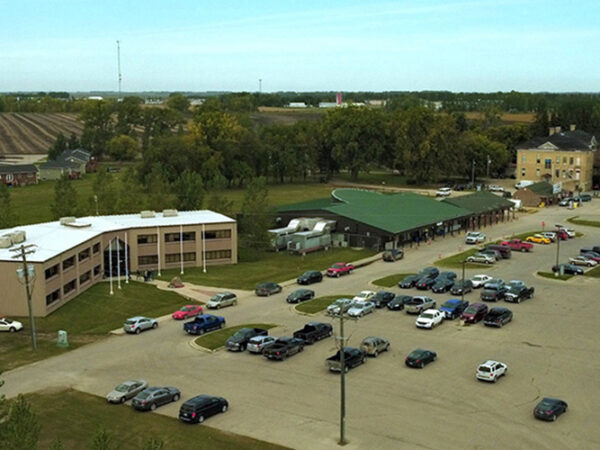
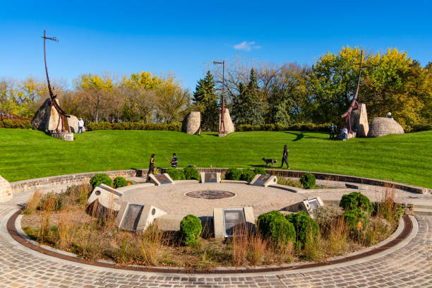

Urban Reserves & Economic Development
Naawi-Oodena (Kapyong Barracks)
A monumental example of modern Treaty implementation is the Kapyong Urban Reserve project. The former military barracks have been reclaimed and are being transformed into Naawi-Oodena, a massive multi-use urban reserve right inside Winnipeg's city limits. This historic partnership among the seven Treaty 1 First Nations serves as a powerful economic engine for their communities.
Long Plain Madison Reserve

Another highly successful urban reserve is operated by the Long Plain First Nation on Madison Street.- Features the highly successful Long Plain First Nations Gas Station.
- Includes a thriving commercial office complex and businesses.
- Generates independent revenue to support community infrastructure and growth.
Unique History & Moving Forward
What Makes Treaty 1 Different?
As the very first post-Confederation treaty, Treaty 1 set the stage for all others. What makes it incredibly unique is the massive disconnect between the written text and the oral "Outside Promises". Unlike later treaties where terms were more clearly codified, Treaty 1 relied heavily on verbal commitments that the Crown initially failed to write down or honor, leading to immediate disputes.
Living the Treaty Today
Treaties are not just history; they are living documents. Today, implementing the Treaty means honoring those original promises and ensuring First Nations have the ability to exercise their inherent rights to self-governance and economic development within the modern Canadian economy.
The Nations & The Land Today
The Seven Nations
The Treaty One Nation is a unified government body representing the seven original First Nations that signed the treaty. By working collectively, they possess significant political and economic leverage.

- Brokenhead Ojibway Nation
- Long Plain First Nation
- Peguis First Nation
- Roseau River Anishinaabe First Nation
- Sagkeeng Anicinabe
- Sandy Bay Ojibway First Nation
- Swan Lake First Nation
Commemorating the Treaty
The physical presence of Treaty 1 is increasingly visible in Winnipeg's modern landscape, serving as a reminder that we are all Treaty people.

The Oodena Celebration Circle
Located at The Forks—a historic meeting place for thousands of years—this natural amphitheater serves as a modern gathering space for ceremonies, drumming, and celebrations.
The Legislative Grounds
A permanent commemorative marker stands at the Manitoba Legislative Building. It acknowledges the territory and the ongoing relationship between the Crown and Indigenous peoples.